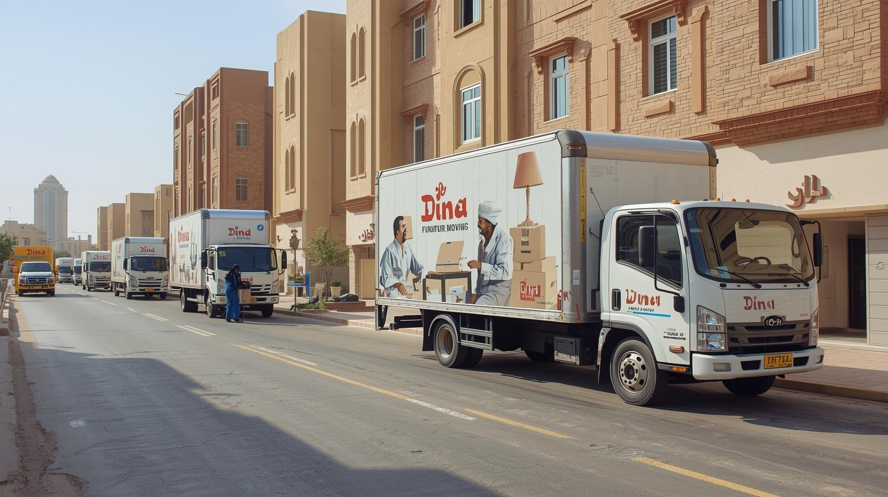
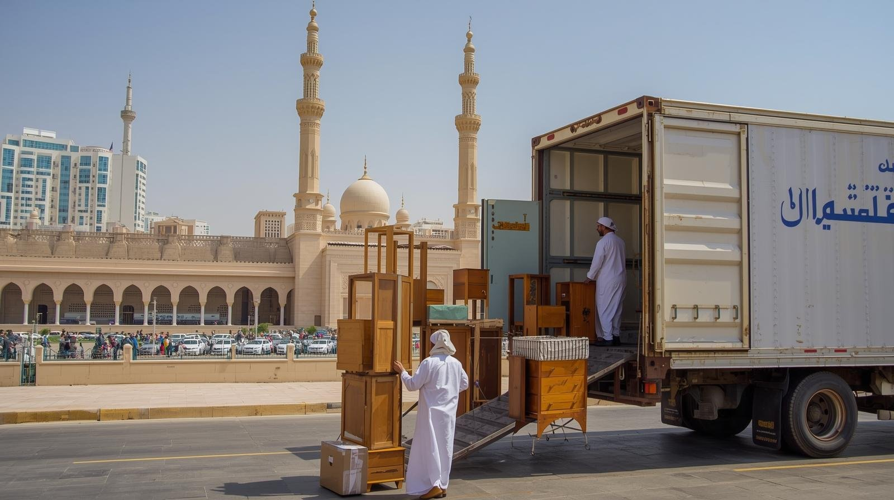

دينا نقل عفش حي الشفاء بالرياض

إذا كنت تبحث عن دينا نقل عفش حي الشفاء توفر لك السرعة والأمان في نقل الأثاث داخل الرياض، فإن شركة نقل الرياض هي خيارك الأمثل، تتميز الشركة بأسطول من سيارات الدينا المجهزة لنقل جميع أنواع العفش بأمان، مع فريق متخصص في التحميل والفك والتركيب، بفضل خبرتها الطويلة والتزامها بالمواعيد، أصبحت الشركة الوجهة الأولى لسكان حي الشفاء بالرياض الذين يبحثون عن خدمة نقل موثوقة واحترافية.
أفضل دينا نقل عفش حي الشفاء بالرياض 200 ريال
تُعد شركة نقل الرياض الخيار الأمثل لمن يبحث عن أفضل دينا نقل عفش حي الشفاء بالرياض، حيث توفر الشركة سيارات دينا مجهزة بأحدث الوسائل لضمان نقل الأثاث بأمان تام وسرعة عالية، تعتمد الشركة على فريق مدرب يتولى عملية الفك، التغليف، والتحميل بدقة، مما يجعل تجربة النقل خالية من القلق أو التلف، تتميز شركة نقل الرياض بخدمتها السريعة داخل حي الشفاء، وحرصها الدائم على الالتزام بالمواعيد وتقديم أسعار تنافسية تناسب جميع العملاء، مما يجعلها الوجهة الأولى لكل من يريد نقل عفشه بسهولة واحترافية داخل الرياض.
خدمات دينا نقل عفش الشفاء مع عمالة متخصصة
تقدم شركة نقل الرياض مجموعة متكاملة من خدمات دينا نقل عفش حي الشفاء مع عمالة متخصصة تمتلك خبرة طويلة في التعامل مع جميع أنواع الأثاث، تتمثل خدماتها في:
- دينا مجهزة بالكامل: تعتمد شركة نقل الرياض على سيارات دينا حديثة ومؤمنة لنقل الأثاث بأمان داخل حي الشفاء بالرياض.
- عمالة مدربة ومتخصصة: توفر الشركة طاقم عمل محترف يجيد فك وتركيب وتغليف جميع أنواع الأثاث بدقة عالية.
- مواد تغليف آمنة: تستخدم الشركة مواد تغليف قوية تحافظ على الأثاث من الخدوش أو الكسر أثناء النقل.
- تنظيم وسرعة في التنفيذ: يتم تنفيذ عملية النقل وفق خطة مدروسة تضمن إنجاز المهمة في أقل وقت ممكن دون التأثير على الجودة.
- التزام كامل بالمواعيد: تلتزم شركة نقل الرياض بمواعيد النقل المتفق عليها، مع توفير خدمة طوارئ للحالات العاجلة داخل حي الشفاء.
- أسعار تنافسية وجودة مضمونة: تقدم الشركة خدماتها بأسعار مناسبة لجميع الفئات مع ضمان كامل على سلامة العفش أثناء النقل.
مميزات دينا نقل عفش حي الشفاء عن الشركات الأخرى
- أسطول دينا حديث ومجهز: تمتلك شركة نقل الرياض سيارات دينا حديثة مجهزة بوسائل تثبيت وحماية تمنع تلف الأثاث أثناء النقل داخل حي الشفاء.
- فريق متخصص ومحترف: تعتمد الشركة على عمالة مدربة بخبرة طويلة في فك وتركيب ونقل العفش بمختلف أنواعه بدقة وسرعة.
- خدمة تغليف عالية الجودة: تقدم الشركة خدمة تغليف احترافية باستخدام مواد قوية تحمي الأثاث من الخدوش أو الكسر.
- تنفيذ سريع ومنظم: بفضل خبرتها ومعرفتها بشوارع حي الشفاء، تضمن شركة نقل الرياض وصول الأثاث بسرعة ودون تأخير.
- أسعار مناسبة وجودة مضمونة: توفر الشركة توازنًا مثاليًا بين السعر والخدمة، مما يجعلها الخيار الأفضل بين شركات نقل العفش في الشفاء.
- خدمة عملاء متوفرة دائمًا: تقدم الشركة دعمًا متواصلًا عبر الهاتف أو الواتساب لتسهيل حجز الخدمة أو الاستفسار في أي وقت.
أسعار دينا نقل عفش حي الشفاء بالرياض
تتميز أسعار دينا نقل عفش حي الشفاء بالرياض بالتنوع والتناسب مع احتياجات العملاء، حيث تحرص شركة نقل الرياض على تقديم حلول مرنة تناسب جميع الفئات، تعتمد تكلفة الخدمة على عدة عوامل مثل حجم الأثاث، وعدد الطوابق، والمسافة بين المواقع، ومستوى الخدمة المطلوبة سواء كانت شاملة للفك والتركيب أو للنقل فقط، ومع ذلك، تلتزم الشركة دائمًا بتوفير أسعار عادلة وجودة عالية في آنٍ واحد، مما يجعلها الخيار الأكثر توازنًا بين التكلفة والخدمة في حي الشفاء.
سيارات نصف نقل لنقل العفش بالرياض
كيف تختار دينا نقل عفش مناسبة في حي الشفاء؟
عند اختيار دينا نقل عفش حي الشفاء من المهم التركيز على جودة الخدمة وليس السعر فقط، فاختيار الشركة المناسبة يضمن لك نقلًا آمنًا وخاليًا من المتاعب، احرص على التعامل مع شركة تمتلك سيارات دينا مجهزة بالكامل وطاقم عمل متخصص في فك وتركيب وتغليف الأثاث، مثل شركة نقل الرياض التي تتميز بخبرتها الطويلة وسمعتها الممتازة في هذا المجال، توفر الشركة خطط نقل مرنة تناسب احتياجات العملاء في حي الشفاء، مع التزام تام بالمواعيد وجودة عالية في كل خطوة من خطوات النقل.
سيارات دينا مجهزة لنقل الأثاث داخل حي الشفاء
توفر شركة نقل الرياض أسطولًا من سيارات دينا مجهزة لنقل الأثاث داخل حي الشفاء، تم تصميمها خصيصًا لتلبية احتياجات النقل السكني والتجاري بأعلى معايير الأمان، تتميز هذه السيارات بمساحات واسعة وأنظمة تثبيت متطورة تمنع حركة الأثاث أثناء السير، مما يضمن وصوله سليمًا دون أي خدوش أو تلف، كما يتم تعقيم وتجهيز سيارات الدينا بشكل دوري لتكون جاهزة دائمًا لأي عملية نقل داخل حي الشفاء بالرياض، مع فريق عمل مدرب يتولى التحميل والتنزيل بعناية واحترافية، هذا التكامل في الخدمة يجعل شركة نقل الرياض الخيار المثالي لكل من يبحث عن نقل آمن ومنظم داخل الحي.
هل توفر دينا نقل عفش الشفاء خدمة التغليف والفك والتركيب؟
نعم، توفر شركة نقل الرياض ضمن خدمات دينا نقل عفش حي الشفاء خدمة متكاملة تشمل التغليف والفك والتركيب لضمان راحة العميل وجودة التنفيذ، يقوم فريق متخصص بفك الأثاث والأجهزة بعناية تامة، ثم تغليفها باستخدام مواد قوية تحميها من الصدمات أو الخدوش أثناء النقل، وبعد الوصول، يتولى الفريق تركيب الأثاث في المكان الجديد بالطريقة الصحيحة ووفق ترتيب العميل، بفضل هذه الخدمات الشاملة، تضمن شركة نقل الرياض تجربة نقل آمنة ومنظمة داخل حي الشفاء بالرياض دون أي عناء أو تلف في الأثاث.
نصائح لنقل الأثاث بأمان داخل حي الشفاء بالرياض
- اختر شركة موثوقة: تعامل مع شركة ذات خبرة مثل شركة نقل الرياض التي تمتلك سجلًا حافلًا في نقل الأثاث بأمان داخل حي الشفاء.
- ابدأ بالتخطيط مبكرًا: حدد مواعيد النقل مسبقًا ورتّب الأغراض لتجنب الارتباك أو نسيان أي قطعة مهمة أثناء النقل.
- استخدم مواد تغليف مناسبة: احرص على تغليف الأثاث جيدًا باستخدام الكراتين، والنايلون، وأغطية الحماية لتفادي الخدوش أو الكسر.
- فك الأثاث الكبير مسبقًا: قم بفك الأثاث الضخم لتسهيل عملية التحميل، أو استعن بفريق شركة نقل الرياض المتخصص في الفك والتركيب.
- راقب التحميل والتنزيل: تأكد من ترتيب القطع داخل سيارة النقل بطريقة منظمة لتوفير المساحة وتفادي الاحتكاك بين الأثاث.
- احرص على التأمين: اختر شركة تقدم ضمانًا على الأثاث أثناء النقل لتفادي أي خسائر غير متوقعة.
- اختر الوقت المناسب للنقل: حاول تنفيذ عملية النقل في الأوقات الهادئة داخل حي الشفاء بالرياض لتفادي الزحام وسرعة الوصول.

شركة موثوقة تقدم خدمات دينا نقل عفش حي الشفاء
تُعد شركة نقل الرياض من أكثر الشركات موثوقية في تقديم خدماتدينا نقل عفش حي الشفاء 200 ريال، بفضل خبرتها الطويلة والتزامها بأعلى معايير الجودة، تمتلك الشركة سيارات دينا مجهزة بالكامل ومخصصة لنقل الأثاث بأمان داخل حي الشفاء، مع فريق عمل محترف يتولى فك وتركيب وتغليف الأثاث بعناية فائقة، كما تهتم الشركة بتنفيذ الخدمة بسرعة ودقة مع الالتزام بالمواعيد، مما يجعلها الخيار المثالي لكل من يبحث عن نقل آمن واحترافي دون أي عناء أو تلف في الأثاث.
في الختام، يبقى اختيار شركة نقل الرياض هو القرار الأمثل لكل من يبحث عن دينا نقل عفش حي الشفاء بخدمة احترافية مضمونة، بفضل خبرتها، وأسعارها المناسبة، وحرصها على تقديم أعلى مستويات الأمان والدقة، أصبحت الشركة وجهة موثوقة لسكان حي الشفاء بالرياض، إذا كنت تخطط للانتقال أو ترغب في نقل أثاثك دون عناء، فإن شركة نقل الرياض تضمن لك تجربة نقل مريحة، آمنة، وسريعة من البداية حتى الوصول إلى وجهتك الجديدة.
الأسئلة الشائعة حول دينا نقل عفش حي الشفاء
هل يمكن حجز دينا نقل عفش الشفاء بشكل عاجل؟
توفر شركة نقل الرياض خدمة نقل فوري وسريع داخل حي الشفاء لتلبية احتياجات العملاء في الحالات العاجلة مع الالتزام بالجودة والمواعيد المحددة.
هل تشمل الخدمة تغليف الأثاث لحمايته أثناء النقل؟
بالتأكيد، تقدم الشركة خدمة تغليف احترافية باستخدام الورق المقوى والنايلون والمواد المقاومة للصدمات لحماية الأثاث أثناء النقل داخل الرياض.
هل أسعار دينا نقل عفش حي الشفاء ثابتة؟
تعتمد الأسعار على نوع الخدمة والمسافة وحجم الأثاث، ومع ذلك تحرص شركة نقل الرياض على تقديم أفضل الأسعار وأعلى جودة في النقل داخل حي الشفاء.